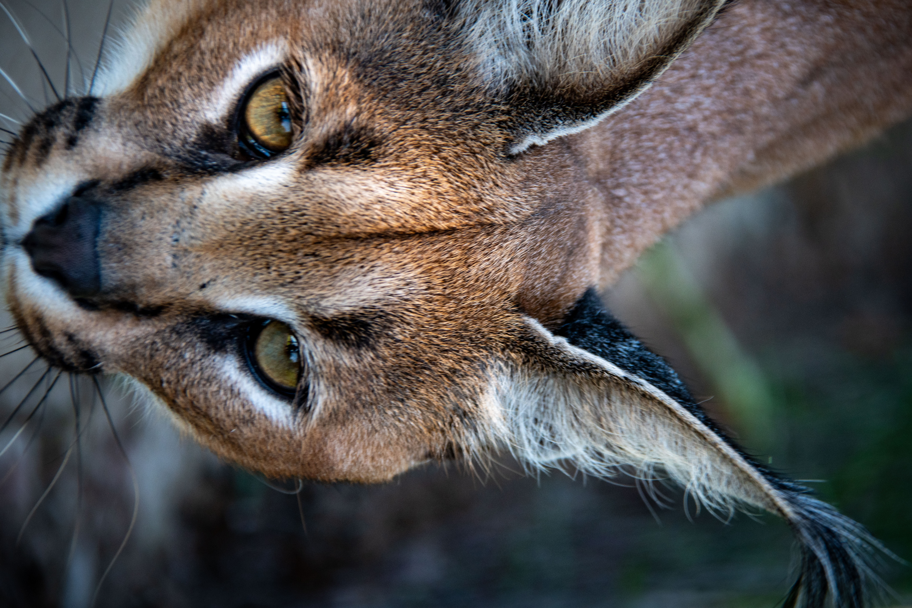
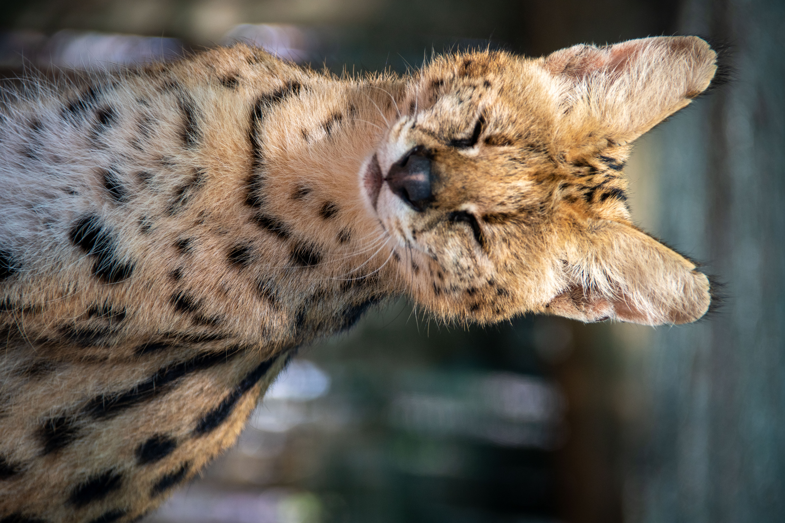

A Sanctuary Built on Science & Respect
Barbosa K&K is a private sanctuary and research reserve outside Potchefstroom, caring for cheetahs and wild small cats with one goal in mind: a future where they thrive in the wild.
More Than a Sanctuary
Tucked away on Plot 17, Wilgeboom, just outside Potchefstroom in the North West Province, Barbosa K&K is home to 31 wild cats across four species: cheetahs, caracals, servals and ocelots. The reserve also supports 8 species of game, creating a living, working ecosystem around our predator families.
Our flagship work is the ethical re-wilding of captive-bred cheetahs, preparing offspring whose lineages can one day help replenish protected African wilderness areas. Alongside that, we provide lifelong, high-standard care for the small cats in our keeping.
Everything we do is guided by science: advanced feline nutrition, data-driven reproductive genetics and spacious natural enclosures designed around how each species lives in the wild.


Dr. Diana du Cros
A distinguished scientist in biology and protein biochemistry who redirected her life's work toward the protection of vulnerable predators.
Moving on from specialised international research laboratories in the United States and Australia, Dr. du Cros established operations in Potchefstroom with an unambiguous mandate: halt the trajectory toward cheetah extinction.
In 2016 she dedicated her personal resources to establishing Barbosa K&K. Today the facility serves as a benchmark for predator well-being, scientific breeding and applied wildlife management.
Our Values
Re-wilding First
Our breeding work has a purpose beyond the fence: preparing cheetah offspring for life in protected wild habitat.
Zero Exploitation
Strictly no petting and no cub handling for visitors. Our cats are observed respectfully, always under staff supervision.
Science-Led Care
Nutrition, genetics and veterinary decisions are driven by research and data, not guesswork.
Every Rand Counts
100% of donations and volunteer fees go directly to meat, veterinary care and enclosure building.
How We Got Here
A Career in Science
Dr. Diana du Cros builds her career in biology and protein biochemistry in research laboratories across the United States and Australia.
Barbosa K&K Is Founded
Using her own resources, Dr. du Cros establishes the reserve in Potchefstroom, with cheetah conservation and re-wilding at its heart.
Families Take Root
The sanctuary grows into a home for four species and several family lines. Katja raised Katabi and Keisha, three generations of caracals live together (Kara, her daughter Kanae and Kanae's three girls), and serval Kiara raised Kita.
Open to Visitors & Volunteers
31 cats, 8 game species, daily predator feeding tours, Safari Suites accommodation and a hands-on volunteer programme for South African and international volunteers.
The Species We Care For

Cheetahs
Our flagship species and the focus of our re-wilding work.

Caracals
Tufted ears, red coats and incredible vertical leaps.

Servals
The longest legs and biggest ears for their size of any cat.

Ocelots
Rosette-patterned climbers and masters of camouflage.
Photo Gallery
Tap any photo to view it full size.
Help Us Protect the Wild
Visit at feeding time, spend a week or more volunteering, or sponsor meat for our cats. Every bit of support goes directly to the animals.